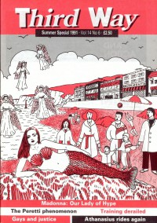

CMnexus
: Contemporary Christian culture, music, and media.
|
MadonnaOn the cover
Summer 1991
ThirdWay | Media coverage- Apr 1985 in Campus Life "Expressions: Material Girl", by Jim Long, Harold Smith
- Oct 1987 in Campus Life "Values In Media: Level 42, Genesis, Whitesnake, Madonna, Suzanne Vega", by Chris Lutes
- Win 1990 in YouthWorker "Focus On Music: A Clue, not a Club", by David S. Hart
- Sum 1991 in ThirdWay "Post-Modernist Madonna?", by Graham Cray
Albums & reviews:1984: Like a Virgin
1986: True Blue
2005: Confessions on a Dance Floor Books about Madonna
- "Playing It Safe" in Dancing With Demons: The Music's Real Master (Jeff Godwin, 1988).
|
|